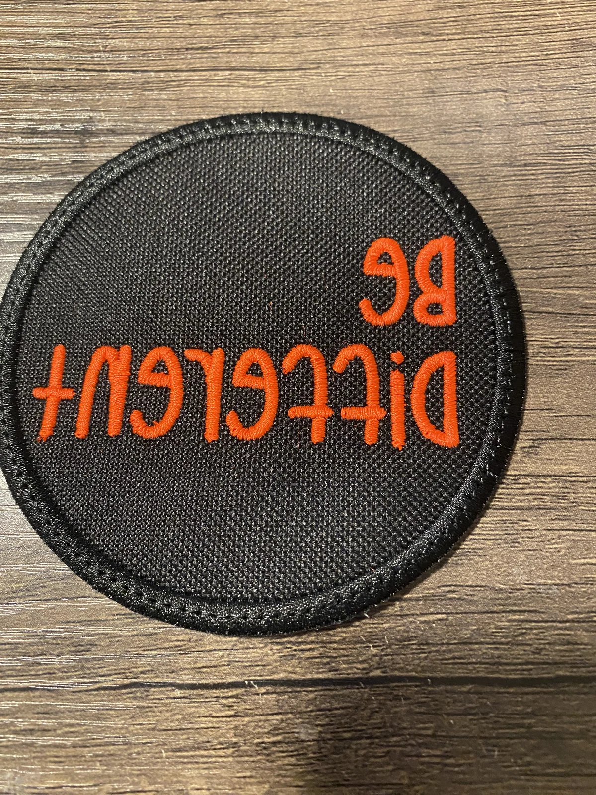
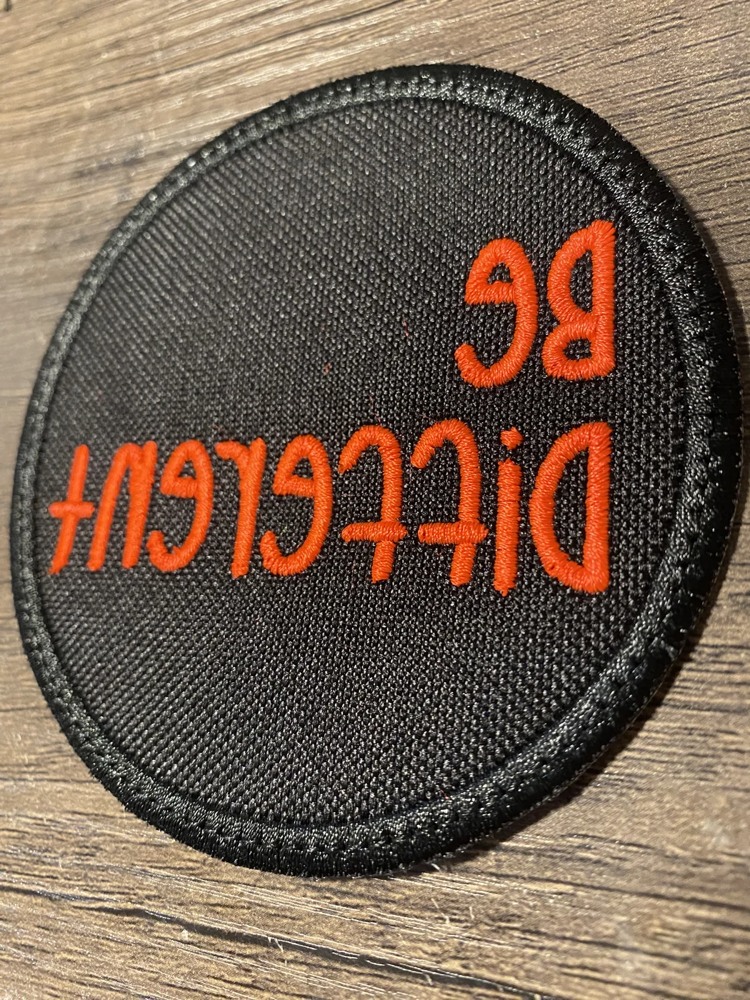

Machine embroidery · Real-time web visualization
Digital to physical
A Hatch preview and a finished patch make it possible to compare stitch texture, edge definition, and contrast across a digital file and a physical object.
- Context
- My Threaded Heart
- My contribution
- Hatch adaptation, patch production and photography
- Media
- Hatch TrueView, finished stitch-out, WebGL study
Project gallery
One design, two colorways
This fabrication study follows a sourced motif. The Hatch preview and the finished piece share the circular border and mirrored lettering, with different thread colorways.






Process
Reading the stitch-out
Preview the construction
The Hatch TrueView image shows where the stitched lettering sits in relation to the edge. The archived DST exports record a 76.2 mm edition and a larger edition around 96 mm across. The preview gives me a way to compare the spacing and edge at the intended size before stitching on fabric.
Inspect the physical piece
The production photograph shows a raised edge and a coarse black ground. The bright lettering makes the unusual orientation legible, while the physical edge is where the texture and finish are easiest to see.
Show the surface clearly
A close product image lets a buyer read how the design sits on fabric. The two views here document fabrication and photography for My Threaded Heart.
File study · Hatch embroidery
Inside a native Hatch file
Revive.EMB is a separate design sample from my Hatch archive. Its embedded TrueView preview shows a gold fill, raised lettering and a dark border.
The EMB keeps the design editable in Hatch. A DST carries the stitch and machine commands used for production.

Real-time 3D · Portfolio demo
Explore a stitched surface
This WebGL swatch uses sample geometry built for this portfolio with Codex. Rotate it to see stitch height, or scrub through the order in which the rows appear.

Drag the swatch to turn it. Use the sliders with the keyboard to rotate it or reveal successive passes.
WebGL implementation
How the viewer works
Each sample strand is a short strip of triangles that rises from the fabric and falls back into it. The viewer draws the fabric first and adds the strands in sequence as the progress slider moves. A depth buffer keeps the raised geometry in view as the swatch turns.
The model redraws when it receives input or when its viewport changes. Browser tests confirmed that rotation and progress changed the render, reset restored the opening view, and a still appeared when WebGL was unavailable.